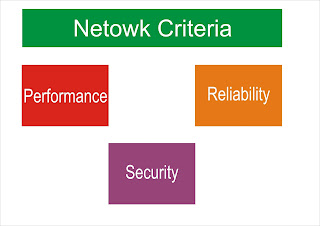
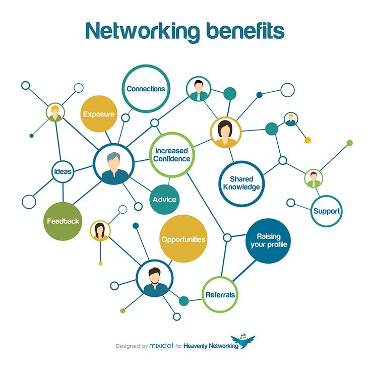

Computer Networking
Introduction To Networking
→What Is Networking?
→Networking is the exchange of information and ideas among people with a common profession or special interest, usually in an informal social setting. Networking often begins with a single point of common ground.
NETWORKING
→What IS Computer Networking?
→A Computer Networking is group of two or more computers interconnected Via Cables or through wireless modes, for sharing hardware and software resourse.
→Resourse like Printer,Files,Email,or things like Video/Audio Confrenencing etc.
→A Typical Network can look likes this:-
→NETWORK CRITERIA

→A network must meet certain number of criteria.
→The most important criteria are:-
→Performance=>Transit Time, Response Time, Throughput, Delay, Transmission medium type etc...
→Reliability=>Downtime and Point of Failure.
→Security=>Unauthorized access,damage,breaches,data losses
→BENEFITS OF NETWORK
